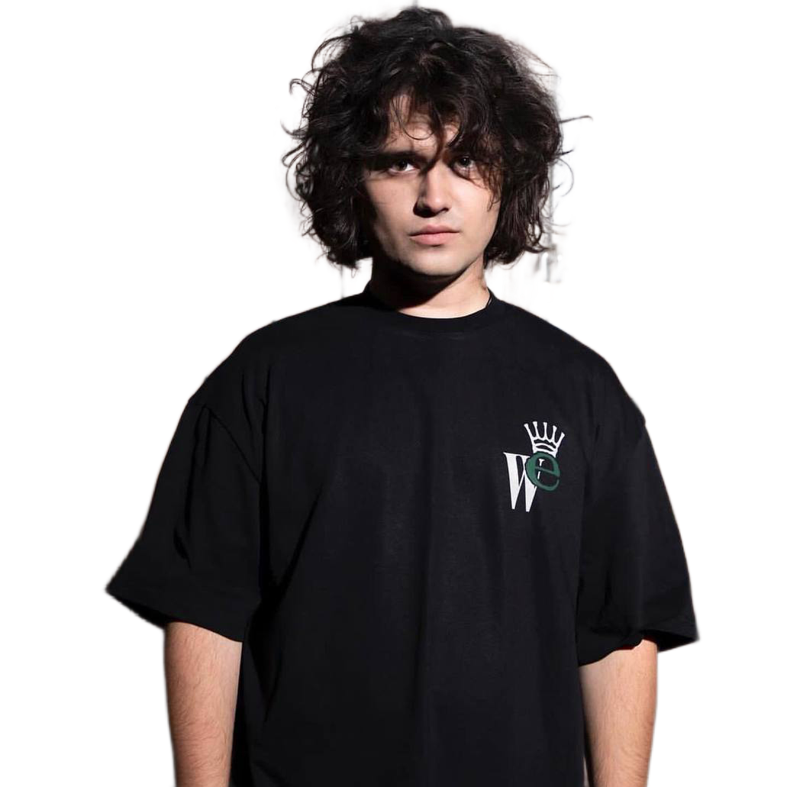
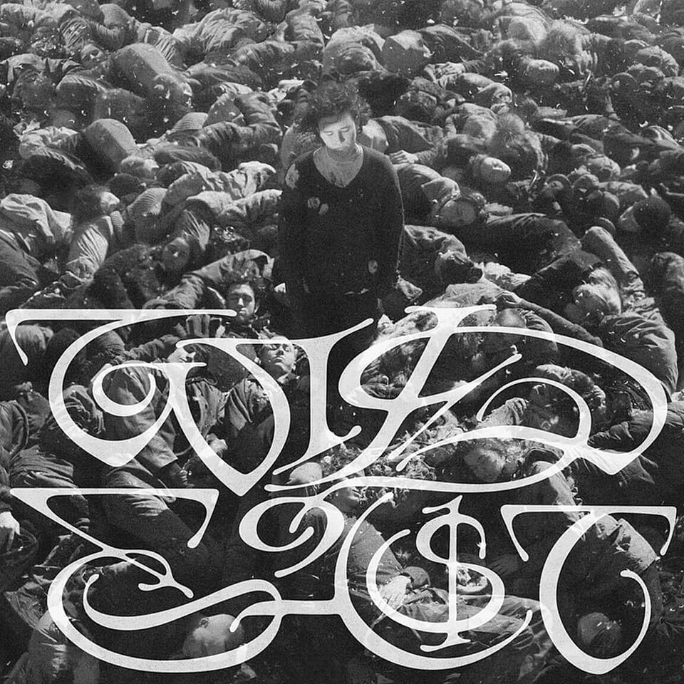
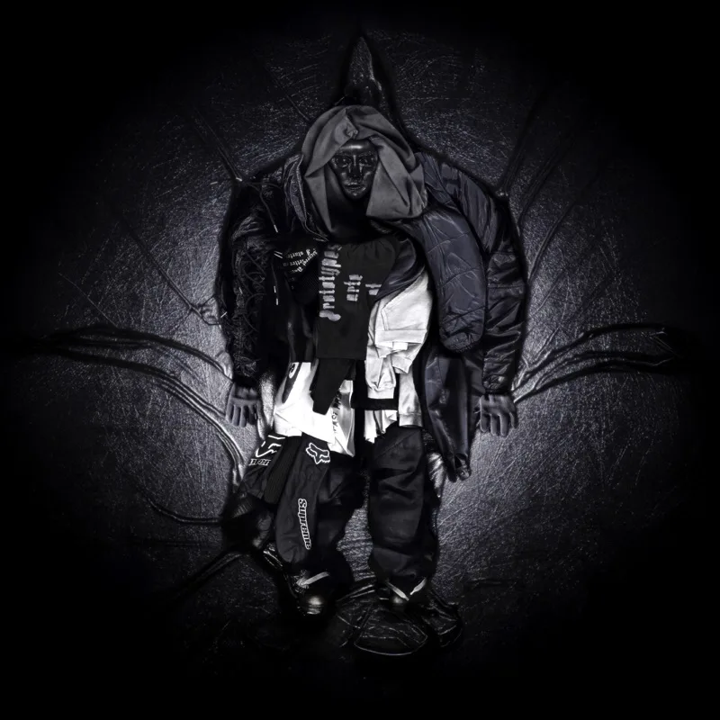
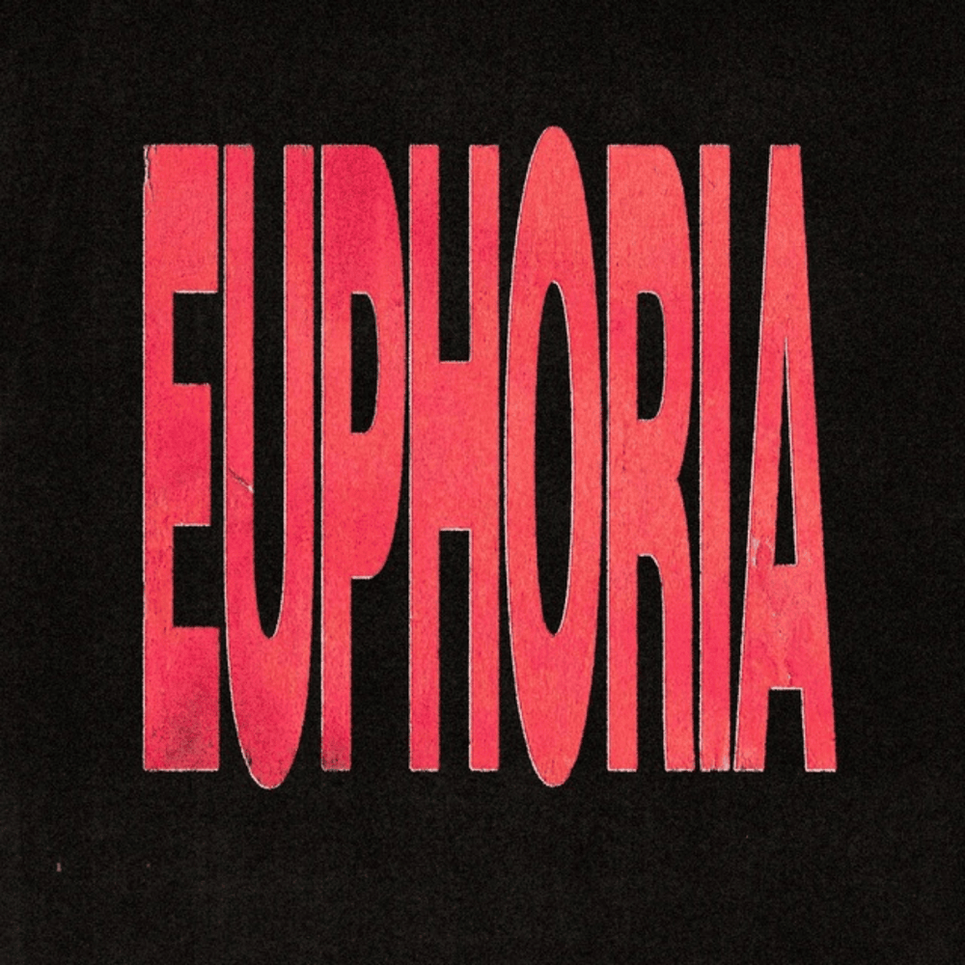

SALUKI
Арсений Несатый, известный как SALUKI — российский рэпер и музыкальный продюсер. Родился в 1997 году в Москве. Относительную известность приобрёл как участник объединения Dead Dynasty, ставшего одним из главных открытий второй половины 2010-х в русском хип-хопе.
Карьеру начинал именно как продюсер — в список его работ входит, например, хит «5 минут назад» (2016, в исполнении Pharaoh и Boulevard Depo), взорвавший российские чарты. Этот бит был сделан всего за пять минут в приложении на iPod.
В 2018 году выпустил EP «Улицы, дома», дебютировав как исполнитель. Дебютный альбом «Властелин калек» (2019) задал вектор развития артиста. Первым большим успехом стал сингл «Тупик» (2019) с ROCKET, а широкую известность принёс фит с ANIKV «Меня не будет» (2020), набравший десятки миллионов прослушиваний.
Большие студийные альбомы «Стыд и слава» (2021, совместно с 104) и «Wild Ea$t» (2023) окончательно закрепили исполнителя в числе звёзд отечественного рэпа. В 2024 году SALUKI попал в рейтинг Forbes «30 до 30» в номинации «Музыка».
Альбомы на виниле
| Обложка | Название альбома | Трек-лист | |||||||||||||
|---|---|---|---|---|---|---|---|---|---|---|---|---|---|---|---|
 |
2023 - WILD EA$T |
|
|||||||||||||
 |
2024 - BOLSHIE KURTKI |
|
|||||||||||||
 |
2026 - EUPHORIA (Еще на моменте создания) |
|